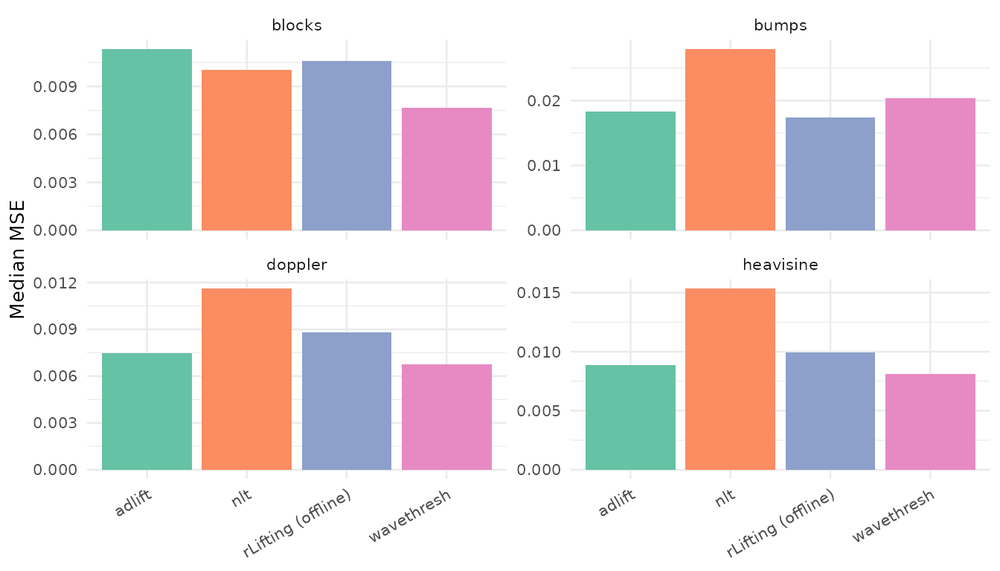
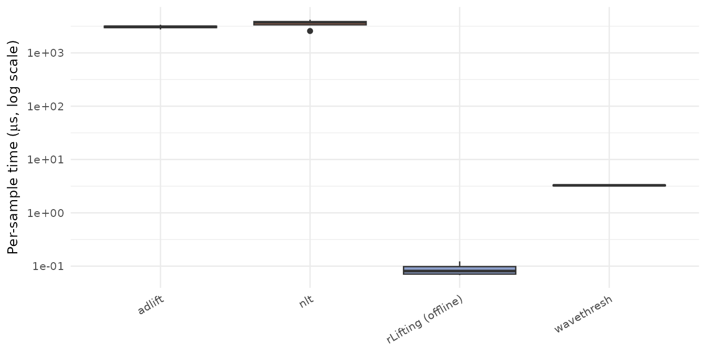
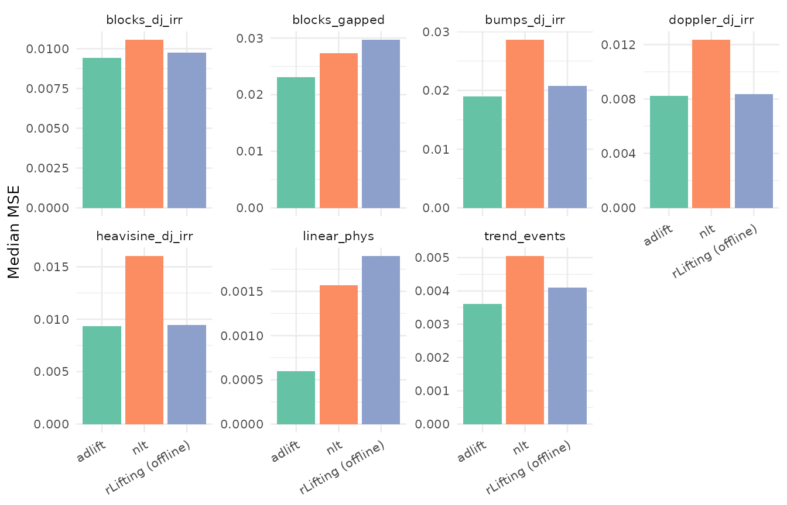
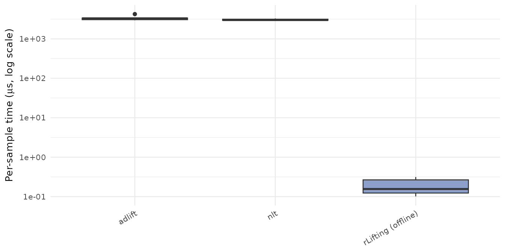
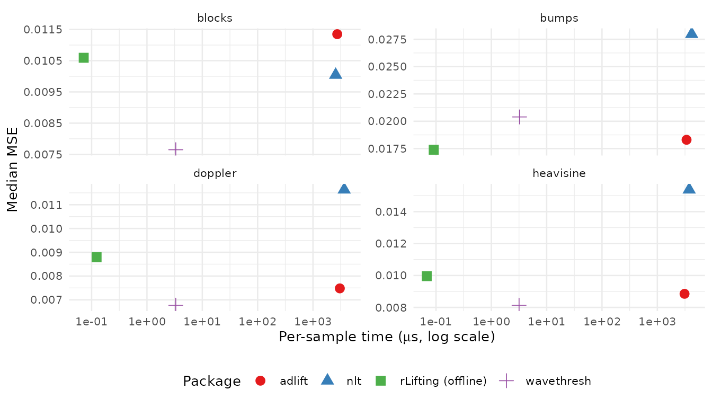

This vignette reports the empirical comparison of
rLifting against three established R packages —
wavethresh (decimated DWT, regular grids),
adlift (adaptive lifting on irregular grids), and
nlt (nondecimated lifting on irregular grids) — and the
internal comparison of rLifting’s three modes (offline, causal, stream).
The aim is to give an honest reading of where rLifting sits in the
design space: which signals it wins on, which it loses, the
speed–quality trade-offs, and the regimes where each package is the
right choice.
All numbers come from the bundled benchmark datasets and are reproducible from the code chunks below.
library(rLifting)
if (!requireNamespace("ggplot2", quietly = TRUE)) {
knitr::opts_chunk$set(eval = FALSE)
message("'ggplot2' is required to render plots. Vignette code will not run.")
} else {
library(ggplot2)
}
data("benchmark_rlifting", package = "rLifting")
data("benchmark_wavethresh", package = "rLifting")
data("benchmark_adlift", package = "rLifting")
data("benchmark_nlt", package = "rLifting")
data("benchmark_rlifting_irregular", package = "rLifting")
data("benchmark_adlift_irregular", package = "rLifting")
data("benchmark_nlt_irregular", package = "rLifting")1. Methodology and scope
Each benchmark cell is a
(signal, package, configuration) triple evaluated over
Monte Carlo replications, each replication being an independent draw of
Gaussian noise added to a deterministic signal. For each cell we report
seven order statistics — min, q1, median, mean, q3, max, se — for both
reconstruction MSE (against the noise-free signal) and wall time. The
“best” of a configuration set means the one with the lowest
median MSE.
Regular grid. Four Donoho–Johnstone test signals
(blocks, bumps, doppler,
heavisine), each of length
,
with i.i.d. Gaussian noise at
.
The same signals and the same noise distribution apply to all four
packages, so the regular-grid MSE comparison is apples-to-apples on the
signal and noise dimensions. Each package was swept over its own
parameter space (rLifting: 6 wavelets × 5 boundaries × 12 thresholding
methods × 3 modes; wavethresh: 8 wavelets × 22
boundary/threshold/shrinkage combinations; adlift and nlt: 4 predictor
families × 24 option combinations); the “best” therefore picks the
highest-quality reachable configuration in each package on its own
terms.
Irregular grid. Seven test signals: the four Donoho–Johnstone
classics resampled at non-uniform positions (blocks_dj_irr,
bumps_dj_irr, doppler_dj_irr,
heavisine_dj_irr) and three physically motivated signals
(linear_phys, trend_events,
blocks_gapped). Per-signal noise standard deviations range
from 0.15 to 0.50 depending on the signal scale (see
?benchmark_rlifting_irregular). All three irregular-grid
packages saw the same realisations.
1.1 Which package appears where, and why
The two grids cover different design surfaces, and the package selection reflects each package’s native regime:
wavethreshappears only in §2–§3 (regular grid). It implements the decimated DWT and assumes uniform sampling. It can be applied to irregularly-sampled data only by first resampling to a uniform grid — but that introduces a choice of resampling method (linear interpolation, spline, kernel regression, …) that would dominate the empirical comparison and hide which package’s denoising primitive actually does the work. The cleanest read of wavethresh’s capability is on its native regime; the irregular comparison therefore restricts to packages that handle non-uniform sampling natively.rLiftingappears in both §2 and §5. Including it on the regular grid (§2) answers a fair question: is rLifting’s native irregular-grid support free, or does the engine pay a quality penalty when used on the regime wherewavethreshis the established reference? The §2 numbers settle it — on the four DJ signals rLifting trails wavethresh by ~18% at the geometric mean MSE level while running ~40× faster per sample. Including it on the irregular grid (§5) puts it head-to-head with the two native irregular packages (adlift,nlt).adliftandnltappear in both §2 and §5. They are both irregular-grid lifting packages but also ship regular-grid implementations. Including them in §2 lets us check whether the irregular machinery costs anything in MSE when fed a uniform grid (it doesn’t: adlift sits within 12% of wavethresh at the geomean level). Including them in §5 is the main cross-package comparison on the irregular grid.rLifting’s causal and stream modes (§4 and §7) have no counterpart in the other three packages. None of
wavethresh,adlift, ornltimplements sliding-window denoising in either grid. The §4/§7 comparisons are therefore intra-rLifting only — but the modes are themselves part of what rLifting offers and the speed–quality trade-off they expose is unique to this package in the comparison set.
1.2 What is not measured
Non-Gaussian noise, non-stationary noise, signal lengths other than
,
real-world signals (ECG, financial, geophysical), pathologies of the
irregular grid beyond the seven canonical cases, and the
update_freq knob in causal/stream modes (held at 1
throughout). The conclusions below should not be extrapolated past these
boundaries without a local check.
2. Regular grid — MSE
Best achievable configuration
The question this section answers: if you have uniformly-sampled
data, is there a quality cost to using rLifting instead of
the established regular-grid reference (wavethresh)?
For each (package, signal) pair we report the median MSE at the
package’s empirically best configuration:
reg_best = function(df, mse_col, time_col, pkg_label) {
do.call(
rbind,
by(
df, df$Signal, function(s) {
i = which.min(s[[mse_col]])
data.frame(
Signal = s$Signal[i],
Package = pkg_label,
MSE = s[[mse_col]][i],
us = s[[time_col]][i] * 1e6 / s$N[i]
)
}
)
)
}
off_reg = benchmark_rlifting[benchmark_rlifting$Mode == "offline", ]
reg = rbind(
reg_best(off_reg, "MSE_median", "Time_total_median", "rLifting (offline)"),
reg_best(benchmark_wavethresh, "MSE_median", "Time_median", "wavethresh"),
reg_best(benchmark_adlift, "MSE_median", "Time_median", "adlift"),
reg_best(benchmark_nlt, "MSE_median", "Time_median", "nlt")
)
reg_wide = reshape(
reg[, c("Signal", "Package", "MSE")],
idvar = "Signal", timevar = "Package", direction = "wide"
)
names(reg_wide) = sub("MSE\\.", "", names(reg_wide))
knitr::kable(
reg_wide, row.names = FALSE, digits = 4,
caption = "Regular-grid MSE at each package's best configuration."
)| Signal | rLifting (offline) | wavethresh | adlift | nlt |
|---|---|---|---|---|
| blocks | 0.0106 | 0.0076 | 0.0113 | 0.0100 |
| bumps | 0.0174 | 0.0204 | 0.0183 | 0.0280 |
| doppler | 0.0088 | 0.0068 | 0.0075 | 0.0116 |
| heavisine | 0.0100 | 0.0081 | 0.0089 | 0.0154 |
ggplot(reg, aes(x = Package, y = MSE, fill = Package)) +
geom_col() +
facet_wrap(~ Signal, scales = "free_y") +
scale_fill_brewer(palette = "Set2") +
labs(x = NULL, y = "Median MSE") +
theme_minimal(base_size = 10) +
theme(
legend.position = "none",
axis.text.x = element_text(angle = 30, hjust = 1)
)
Regular-grid MSE at each package’s best configuration, by signal.
Reading the table: wavethresh is the clear leader,
winning on three of four signals; rLifting wins only on
bumps. The gap from rLifting to the winner
ranges from 0% (bumps) to ~39% (blocks) and
~29% (doppler). adlift is competitive on the
smooth signals (doppler, heavisine) but trails
on blocks and bumps; nlt is
consistently last. §2.2 and §3 will show what wavethresh’s MSE lead
costs: it requires the most tuning to reach its best (§2.3) and runs
~40× slower per sample (§3).
As a single-number summary, the geometric mean MSE across the four signals:
geom_mean = function(x) exp(mean(log(x)))
geom_tbl = aggregate(MSE ~ Package, data = reg, FUN = geom_mean)
geom_tbl$MSE = round(geom_tbl$MSE, 4)
geom_tbl = geom_tbl[order(geom_tbl$MSE), ]
knitr::kable(
geom_tbl, row.names = FALSE,
caption = "Geometric mean MSE across the four DJ signals."
)| Package | MSE |
|---|---|
| wavethresh | 0.0096 |
| adlift | 0.0108 |
| rLifting (offline) | 0.0113 |
| nlt | 0.0150 |
wavethresh leads at the geomean level (0.0096), followed
by adlift (0.0108, ~12% above wavethresh),
rLifting (0.0113, ~18% above wavethresh), and
nlt (0.0150, ~33% above rLifting). rLifting pays a modest
but real ~18% geomean penalty relative to wavethresh — a package built
specifically for this regime. It wins outright on bumps and
is the fastest package by far (§3); whether the geomean gap matters
depends on the application.
Out-of-the-box configuration
The best-configuration comparison above requires knowing which wavelet, boundary, and threshold method to use — knowledge that comes from reading the vignettes or running a sweep. The table below fixes a single default for each package and measures what you get on the first call without tuning:
- rLifting:
haar+symmetric+ universal threshold + semisoft shrinkage (offline). - wavethresh: filter
db1(Haar) +BayesThreshpolicy (soft) — the package’s default threshold method. - adlift / nlt:
LinearPredpredictor, 1 neighbour, interpolating, no closure, mean aggregation — the simplest fixed predictor in each package.
rl_def = benchmark_rlifting[
benchmark_rlifting$Mode == "offline" &
benchmark_rlifting$Wavelet == "haar" &
benchmark_rlifting$Boundary == "symmetric" &
benchmark_rlifting$Method == "universal_semisoft",
c("Signal", "MSE_median")
]
wt_def = benchmark_wavethresh[
benchmark_wavethresh$Wavelet == "db1" &
benchmark_wavethresh$Boundary == "BayesThresh_soft",
c("Signal", "MSE_median")
]
ad_def = benchmark_adlift[
benchmark_adlift$Wavelet == "LinearPred" &
benchmark_adlift$Boundary == "linear_n1_int_noclo_mean",
c("Signal", "MSE_median")
]
nlt_def = benchmark_nlt[
benchmark_nlt$Wavelet == "LinearPred" &
benchmark_nlt$Boundary == "linear_n1_int_noclo_mean",
c("Signal", "MSE_median")
]
signals_ord = c("blocks", "bumps", "doppler", "heavisine")
def_wide = data.frame(
Signal = signals_ord,
rLifting = rl_def$MSE_median[match(signals_ord, rl_def$Signal)],
wavethresh = wt_def$MSE_median[match(signals_ord, wt_def$Signal)],
adlift = ad_def$MSE_median[match(signals_ord, ad_def$Signal)],
nlt = nlt_def$MSE_median[match(signals_ord, nlt_def$Signal)]
)
knitr::kable(
def_wide, row.names = FALSE, digits = 4,
caption = "Regular-grid MSE at each package's default (out-of-the-box) configuration."
)| Signal | rLifting | wavethresh | adlift | nlt |
|---|---|---|---|---|
| blocks | 0.0116 | 0.0076 | 0.0189 | 0.0272 |
| bumps | 0.0495 | 0.0492 | 0.0194 | 0.0287 |
| doppler | 0.0114 | 0.0154 | 0.0075 | 0.0128 |
| heavisine | 0.0284 | 0.0329 | 0.0089 | 0.0154 |
def_geom = data.frame(
Package = c("rLifting", "wavethresh", "adlift", "nlt"),
Default = round(c(
geom_mean(def_wide$rLifting),
geom_mean(def_wide$wavethresh),
geom_mean(def_wide$adlift),
geom_mean(def_wide$nlt)
), 4)
)
knitr::kable(
def_geom, row.names = FALSE,
caption = "Geometric mean MSE at default configuration (regular grid)."
)| Package | Default |
|---|---|
| rLifting | 0.0208 |
| wavethresh | 0.0209 |
| adlift | 0.0125 |
| nlt | 0.0198 |
At default settings, rLifting and
wavethresh are essentially tied (~0.021 geomean), and
nlt is close behind. adlift has the best
default (0.0125) because its adaptive predictor already selects good
coefficients locally — there is little the user needs to specify. On
blocks, rLifting’s default (0.0116)
outperforms wavethresh’s (0.0076 with BayesThresh; but
0.0781 with the classic universal_soft threshold, which
shows how sensitive wavethresh is to the choice of policy).
adlift and nlt with their fixed linear
predictor do well on smooth signals (doppler,
heavisine) but lag on bumps.
Tuning cost
The gap between the default and the best achievable configuration measures how much expert knowledge each package requires:
best_geom = c(
rLifting = geom_mean(reg$MSE[reg$Package == "rLifting (offline)"]),
wavethresh = geom_mean(reg$MSE[reg$Package == "wavethresh"]),
adlift = geom_mean(reg$MSE[reg$Package == "adlift"]),
nlt = geom_mean(reg$MSE[reg$Package == "nlt"])
)
def_geom_v = c(
rLifting = geom_mean(def_wide$rLifting),
wavethresh = geom_mean(def_wide$wavethresh),
adlift = geom_mean(def_wide$adlift),
nlt = geom_mean(def_wide$nlt)
)
tuning_tbl = data.frame(
Package = c("rLifting", "wavethresh", "adlift", "nlt"),
Default = round(def_geom_v, 4),
Best = round(best_geom, 4),
Multiplier = round(def_geom_v / best_geom, 2)
)
knitr::kable(
tuning_tbl, row.names = FALSE,
caption = "Tuning cost: ratio of default to best geomean MSE. Larger = more benefit from tuning."
)| Package | Default | Best | Multiplier |
|---|---|---|---|
| rLifting | 0.0208 | 0.0113 | 1.84 |
| wavethresh | 0.0209 | 0.0096 | 2.17 |
| adlift | 0.0125 | 0.0108 | 1.16 |
| nlt | 0.0198 | 0.0150 | 1.32 |
adlift needs almost no tuning (1.16×): its adaptive
predictor does the heavy lifting automatically. rLifting is
next (1.84×): its default haar + semisoft + universal is already a
reasonable first guess for most signals. wavethresh
benefits the most from tuning (2.18×): choosing the right filter family
and threshold policy requires wavelet expertise. The practical
implication: rLifting is a good package to reach for before
you have signal-specific knowledge; adlift is the right
choice when you want a self-tuning offline denoiser and speed is
secondary.
3. Regular grid — speed
Per-sample times at each package’s best configuration:
speed_tbl = aggregate(us ~ Package, data = reg, FUN = median)
speed_tbl$us = round(speed_tbl$us, 2)
speed_tbl = speed_tbl[order(speed_tbl$us), ]
names(speed_tbl) = c("Package", "us_per_sample_median")
knitr::kable(
speed_tbl, row.names = FALSE,
caption = "Per-sample time at best configuration, median across the four DJ signals."
)| Package | us_per_sample_median |
|---|---|
| rLifting (offline) | 0.08 |
| wavethresh | 3.28 |
| adlift | 3078.37 |
| nlt | 3715.69 |
ggplot(reg, aes(x = Package, y = us, fill = Package)) +
geom_boxplot() +
scale_y_log10() +
scale_fill_brewer(palette = "Set2") +
labs(x = NULL, y = expression("Per-sample time ("*mu*"s, log scale)")) +
theme_minimal(base_size = 10) +
theme(
legend.position = "none",
axis.text.x = element_text(angle = 30, hjust = 1)
)
Per-sample time at each package’s best configuration, log scale.
The gap is large. rLifting offline is ~40× faster than
wavethresh and ~40 000× faster than adlift /
nlt. The difference is structural: rLifting’s
offline path runs LWT + threshold + ILWT as a single C++ pass with no
per-sample R allocations
(inst/notes/03-zero-allocation-engine.md);
wavethresh does the equivalent work in C with some R
overhead per filter call; adlift and nlt
implement the lifting steps in pure R closures.
Combined with §2: on the regular grid rLifting runs ~40×
faster per sample than wavethresh while trailing it by ~18%
at the geometric mean MSE level. On signal lengths beyond
the speed gap widens linearly — the per-sample-time constant factor of
the C++ engine dominates the wall time of any package once signals are
long enough.
4. rLifting modes — regular grid
For completeness, the three rLifting modes on the same four signals:
mode_best = function(mode_name) {
sub = benchmark_rlifting[benchmark_rlifting$Mode == mode_name, ]
do.call(
rbind,
by(
sub, sub$Signal,
function(s) {
i = which.min(s$MSE_median)
data.frame(
Signal = s$Signal[i], Mode = mode_name,
MSE = s$MSE_median[i], us = s$Per_sample_us_median[i]
)
}
)
)
}
modes_reg = rbind(
mode_best("offline"),
mode_best("causal"),
mode_best("stream")
)
modes_mse = reshape(
modes_reg[, c("Signal","Mode","MSE")],
idvar = "Signal", timevar = "Mode", direction = "wide"
)
names(modes_mse) = sub("MSE\\.", "", names(modes_mse))
modes_mse$causal_penalty = round(modes_mse$causal / modes_mse$offline, 2)
modes_mse$stream_penalty = round(modes_mse$stream / modes_mse$offline, 2)
modes_mse[, c("offline","causal","stream")] = round(
modes_mse[, c("offline","causal","stream")],
4
)
knitr::kable(
modes_mse, row.names = FALSE,
caption = "MSE per mode, regular grid. Penalty = causal/offline or stream/offline."
)| Signal | offline | causal | stream | causal_penalty | stream_penalty |
|---|---|---|---|---|---|
| blocks | 0.0106 | 0.0370 | 0.0372 | 3.49 | 3.51 |
| bumps | 0.0174 | 0.0525 | 0.0524 | 3.02 | 3.01 |
| doppler | 0.0088 | 0.0331 | 0.0329 | 3.77 | 3.74 |
| heavisine | 0.0100 | 0.0411 | 0.0409 | 4.13 | 4.10 |
Sliding-window modes pay ~3–5× MSE versus offline on these signals.
The penalty has two sources: the finest-level
estimate is computed from
samples per window instead of
samples globally, raising the threshold variance; and the per-window
boundary zone is a larger fraction of the work than at offline scale (§6
of vignette("v04-boundary-modes") covers the boundary
side).
Per-sample times by mode:
modes_speed = reshape(
modes_reg[, c("Signal","Mode","us")],
idvar = "Signal", timevar = "Mode",
direction = "wide"
)
names(modes_speed) = sub("us\\.", "", names(modes_speed))
modes_speed[, c("offline", "causal", "stream")] = round(
modes_speed[, c("offline", "causal", "stream")], 2
)
knitr::kable(
modes_speed, row.names = FALSE,
caption = "Per-sample time per mode, regular grid (us)."
)| Signal | offline | causal | stream |
|---|---|---|---|
| blocks | 0.07 | 4.12 | 12.15 |
| bumps | 0.09 | 7.42 | 10.04 |
| doppler | 0.12 | 14.96 | 10.02 |
| heavisine | 0.07 | 7.00 | 11.34 |
Causal is 60–130× slower per sample than offline. Causal does one full LWT + threshold + ILWT pass per sample (vs. once total for the whole signal in offline); stream pays an additional R closure invocation overhead on top of the same C++ work. Stream and causal are comparable in per-sample time; on lightweight wavelets the R closure overhead can push stream modestly above causal, while on heavier wavelets the C++ cost dominates and the two converge.
rLifting ranking per mode
The optimal wavelet shifts between modes. The table below shows the wavelet ranking per signal at each mode (minimising over all boundaries and threshold methods):
wav_rank = do.call(
rbind, lapply(
c("offline", "causal", "stream"),
function(mode) {
mse_col = if (mode == "offline") "MSE_median" else "MSE_settled_median"
sub = benchmark_rlifting[benchmark_rlifting$Mode == mode, ]
agg = aggregate(sub[[mse_col]] ~ sub$Signal + sub$Wavelet, FUN = min)
names(agg) = c("Signal", "Wavelet", "MSE")
do.call(
rbind, lapply(
unique(agg$Signal),
function(s) {
ss = agg[agg$Signal == s, ]
ss = ss[order(ss$MSE), ]
data.frame(
Mode = mode,
Signal = s,
rank1 = ss$Wavelet[1],
rank2 = ss$Wavelet[2],
rank3 = ss$Wavelet[3],
rank4 = ss$Wavelet[4]
)
}
)
)
}
)
)
knitr::kable(
wav_rank, row.names = FALSE,
caption = paste0(
"Wavelet ranking per mode and signal (ranks 1-4 of 5 wavelets; ",
"dd4 is consistently 5th and omitted)."
)
)| Mode | Signal | rank1 | rank2 | rank3 | rank4 |
|---|---|---|---|---|---|
| offline | blocks | haar | cdf53 | db2 | cdf97 |
| offline | bumps | cdf97 | cdf53 | db2 | haar |
| offline | doppler | cdf97 | db2 | cdf53 | haar |
| offline | heavisine | db2 | cdf97 | cdf53 | haar |
| causal | blocks | haar | cdf53 | cdf97 | db2 |
| causal | bumps | haar | cdf53 | cdf97 | db2 |
| causal | doppler | cdf97 | haar | cdf53 | db2 |
| causal | heavisine | haar | cdf97 | cdf53 | db2 |
| stream | blocks | haar | cdf53 | cdf97 | db2 |
| stream | bumps | haar | cdf53 | cdf97 | db2 |
| stream | doppler | cdf97 | haar | cdf53 | db2 |
| stream | heavisine | haar | cdf97 | cdf53 | db2 |
Two patterns stand out. In offline mode haar wins only
on blocks (a piecewise-constant signal where its single-tap
predict is exact); cdf97 or db2 lead
everywhere else. In causal and stream modes the picture inverts:
haar dominates on blocks, bumps,
and heavisine; cdf97 retains its edge only on
doppler. The reason is the sliding-window boundary zone:
longer filters spend a higher fraction of the window near the edge,
where boundary artefacts inflate the MSE more than the extra vanishing
moments help. dd4 is consistently last across all modes and
signals — its Lagrange-4 predict step is useful on irregular grids (§7)
but is not competitive on regular uniform grids where the simpler
filters win.
5. Irregular grid — MSE
Best achievable configuration
The question this section answers: if your data is irregularly
sampled, where does rLifting sit relative to the two
packages built specifically for that regime?
wavethresh is excluded here for the reason given in §1.1
(it requires uniform sampling). On the seven irregular-grid signals,
each package’s best configuration:
irr_best = function(df, mse_col, time_col, pkg_label) {
do.call(
rbind, by(
df, df$Signal,
function(s) {
i = which.min(s[[mse_col]])
data.frame(
Signal = s$Signal[i],
Package = pkg_label,
MSE = s[[mse_col]][i],
us = s[[time_col]][i] * 1e6 / s$N[i]
)
}
)
)
}
off_irr = benchmark_rlifting_irregular[
benchmark_rlifting_irregular$Mode == "offline",
]
irr = rbind(
irr_best(off_irr, "MSEpos_median", "Timepos_median", "rLifting (offline)"),
irr_best(benchmark_adlift_irregular, "MSE_median", "Time_median", "adlift"),
irr_best(benchmark_nlt_irregular, "MSE_median", "Time_median", "nlt")
)
irr_wide = reshape(
irr[, c("Signal","Package","MSE")],
idvar = "Signal", timevar = "Package", direction = "wide"
)
names(irr_wide) = sub("MSE\\.", "", names(irr_wide))
knitr::kable(
irr_wide, row.names = FALSE, digits = 4,
caption = "Irregular-grid MSE at each package's best configuration."
)| Signal | rLifting (offline) | adlift | nlt |
|---|---|---|---|
| blocks_dj_irr | 0.0098 | 0.0094 | 0.0106 |
| blocks_gapped | 0.0297 | 0.0231 | 0.0274 |
| bumps_dj_irr | 0.0208 | 0.0190 | 0.0286 |
| doppler_dj_irr | 0.0084 | 0.0082 | 0.0124 |
| heavisine_dj_irr | 0.0094 | 0.0093 | 0.0160 |
| linear_phys | 0.0019 | 0.0006 | 0.0016 |
| trend_events | 0.0041 | 0.0036 | 0.0051 |
ggplot(irr, aes(x = Package, y = MSE, fill = Package)) +
geom_col() +
facet_wrap(~ Signal, scales = "free_y", nrow = 2) +
scale_fill_brewer(palette = "Set2") +
labs(x = NULL, y = "Median MSE") +
theme_minimal(base_size = 10) +
theme(
legend.position = "none",
axis.text.x = element_text(angle = 30, hjust = 1)
)
Irregular-grid MSE at each package’s best configuration, by signal.
adlift wins on all seven signals. The margin is small on
six (1–30%) and large on one (linear_phys, where adlift is
3.2× better than rLifting). The reason for the linear_phys
gap is the differing prediction strategy: adlift::fwtnp
uses adaptive prediction, choosing predictor coefficients from
local signal data; this gives near-perfect predictions on smooth signals
dominated by a linear trend. rLifting’s cdf53 (or any of
its fixed-coefficient lifting schemes) cannot match this on a signal
whose first derivative is essentially constant.
rLifting beats nlt on five of seven
signals; ties or loses by a few percent on the other two. Against
nlt specifically, rLifting’s lower-overhead C++ engine and
SCAD shrinkage give the edge across most signal classes.
geom_tbl_irr = aggregate(MSE ~ Package, data = irr, FUN = geom_mean)
geom_tbl_irr$MSE = round(geom_tbl_irr$MSE, 4)
geom_tbl_irr = geom_tbl_irr[order(geom_tbl_irr$MSE), ]
knitr::kable(
geom_tbl_irr, row.names = FALSE,
caption = "Geometric mean MSE across the seven irregular-grid signals."
)| Package | MSE |
|---|---|
| adlift | 0.0068 |
| rLifting (offline) | 0.0087 |
| nlt | 0.0104 |
By geomean, adlift is ~28% lower than
rLifting, which is ~20% lower than nlt. Most
of the adlift advantage comes from linear_phys; remove that
signal and the geomean gap shrinks to ~10%. Within ~10% of the
irregular-grid quality reference is a strong result for a package whose
native design serves a wider scope (regular grids in §2, three modes in
§4 and §7, sliding-window denoising at all).
Out-of-the-box configuration
The default for each package on irregular grids:
rLifting uses haar + symmetric
boundary with physical positions t supplied (mandatory on
irregular grids); adlift and nlt use a linear
predictor with 1 neighbour, interpolating, no adaptive closure, and mean
aggregation — the simplest fixed predictor available.
rl_irr_def = benchmark_rlifting_irregular[
benchmark_rlifting_irregular$Mode == "offline" &
benchmark_rlifting_irregular$Wavelet == "haar" &
benchmark_rlifting_irregular$Boundary == "symmetric" &
benchmark_rlifting_irregular$Method == "universal_semisoft",
c("Signal", "MSEpos_median")
]
ad_irr_def = benchmark_adlift_irregular[
benchmark_adlift_irregular$Wavelet == "LinearPred" &
benchmark_adlift_irregular$Boundary == "linear_n1_int_noclo_mean",
c("Signal", "MSE_median")
]
nlt_irr_def = benchmark_nlt_irregular[
benchmark_nlt_irregular$Wavelet == "LinearPred" &
benchmark_nlt_irregular$Boundary == "linear_n1_int_noclo_mean",
c("Signal", "MSE_median")
]
irr_sigs_ord = c(
"blocks_dj_irr", "bumps_dj_irr", "doppler_dj_irr", "heavisine_dj_irr",
"blocks_gapped", "linear_phys", "trend_events"
)
irr_def_wide = data.frame(
Signal = irr_sigs_ord,
rLifting = rl_irr_def$MSEpos_median[match(irr_sigs_ord, rl_irr_def$Signal)],
adlift = ad_irr_def$MSE_median[match(irr_sigs_ord, ad_irr_def$Signal)],
nlt = nlt_irr_def$MSE_median[match(irr_sigs_ord, nlt_irr_def$Signal)]
)
knitr::kable(
irr_def_wide, row.names = FALSE, digits = 4,
caption = "Irregular-grid MSE at each package's default configuration."
)| Signal | rLifting | adlift | nlt |
|---|---|---|---|
| blocks_dj_irr | 0.0103 | 0.0192 | 0.0280 |
| bumps_dj_irr | 0.0514 | 0.0190 | 0.0299 |
| doppler_dj_irr | 0.0122 | 0.0084 | 0.0136 |
| heavisine_dj_irr | 0.0272 | 0.0093 | 0.0160 |
| blocks_gapped | 0.0338 | 0.0470 | 0.0723 |
| linear_phys | 0.4529 | 0.0016 | 0.0017 |
| trend_events | 0.4980 | 0.0038 | 0.0051 |
The default haar configuration splits the seven signals
into two groups. On the four DJ irregular signals and
blocks_gapped — all discontinuous or non-trending —
rLifting is competitive and beats both alternatives on
blocks_dj_irr (0.0103 vs adlift 0.0192) and
blocks_gapped (0.0338 vs adlift 0.0470). On
linear_phys and trend_events — signals with a
strong spatial trend — the default haar produces
catastrophically high MSE (0.45–0.50). This is expected:
haar’s nearest-neighbour predict does not account for the
local slope, so the detail coefficients are proportional to the local
spacing and are not zero even for a linear signal. For trending signals,
the calibrated choice is cdf53 + local_linear
+ t, which recovers the physical positions and reduces
detail coefficients to near-zero on linear inputs.
Tuning cost on irregular grids
irr_best_geom = c(
rLifting = geom_mean(irr$MSE[irr$Package == "rLifting (offline)"]),
adlift = geom_mean(irr$MSE[irr$Package == "adlift"]),
nlt = geom_mean(irr$MSE[irr$Package == "nlt"])
)
irr_def_geom = c(
rLifting = geom_mean(irr_def_wide$rLifting),
adlift = geom_mean(irr_def_wide$adlift),
nlt = geom_mean(irr_def_wide$nlt)
)
irr_tuning_tbl = data.frame(
Package = c("rLifting", "adlift", "nlt"),
Default = round(irr_def_geom, 4),
Best = round(irr_best_geom, 4),
Multiplier = round(irr_def_geom / irr_best_geom, 2)
)
knitr::kable(
irr_tuning_tbl, row.names = FALSE,
caption = "Irregular-grid tuning cost: ratio of default to best geomean MSE."
)| Package | Default | Best | Multiplier |
|---|---|---|---|
| rLifting | 0.0540 | 0.0087 | 6.22 |
| adlift | 0.0097 | 0.0068 | 1.43 |
| nlt | 0.0142 | 0.0104 | 1.37 |
The tuning cost for rLifting on irregular grids is large
(driven by linear_phys and trend_events). On
the five non-trending signals alone the ratio drops to ~1.7× —
comparable to the regular-grid figure. The practical takeaway: if you
know your signal has no strong spatial trend, haar +
t is a solid starting point. If you suspect a trend, start
with cdf53 + local_linear + t
instead.
6. Irregular grid — speed
irr_speed = aggregate(us ~ Package, data = irr, FUN = median)
irr_speed$us = round(irr_speed$us, 2)
irr_speed = irr_speed[order(irr_speed$us), ]
names(irr_speed) = c("Package", "us_per_sample_median")
knitr::kable(
irr_speed, row.names = FALSE,
caption = "Per-sample time at best configuration on irregular grids."
)| Package | us_per_sample_median |
|---|---|
| rLifting (offline) | 0.16 |
| nlt | 2992.87 |
| adlift | 3311.58 |
ggplot(irr, aes(x = Package, y = us, fill = Package)) +
geom_boxplot() +
scale_y_log10() +
scale_fill_brewer(palette = "Set2") +
labs(x = NULL, y = expression("Per-sample time ("*mu*"s, log scale)")) +
theme_minimal(base_size = 10) +
theme(
legend.position = "none",
axis.text.x = element_text(angle = 30, hjust = 1)
)
Per-sample time on irregular grids, log scale.
At irregular grids, rLifting is ~20 000× faster per
sample than adlift and nlt. Both
adlift and nlt perform their lifting steps in
pure R with closure-heavy adaptive prediction logic; the constant-factor
cost is high regardless of signal length.
This is the dimension on which the package-design choice matters
most. For batch single-shot denoising of short signals where wall time
is a one-second affair, the speed gap is academic. For a 100 000-sample
irregular signal, or any streaming application, rLifting is
the only package in this comparison that finishes in a useful time at
all — adlift or nlt would take ~5 minutes per
call where rLifting takes ~16 milliseconds.
The speed advantage also reframes the §5 tuning cost. For a single
signal, rLifting’s full offline configuration space — 360 combinations
of wavelet, boundary, and threshold method — takes ~0.11 s to sweep in
full. A single adlift or nlt call on the same
signal takes ~3.2 s, roughly 29× longer. Running every rLifting
configuration and picking the best one is still faster than a single
adlift or nlt call. There is no practical
trade-off between tuning and time.
7. rLifting modes — irregular grid
mode_best_irr = function(mode_name) {
sub = benchmark_rlifting_irregular[
benchmark_rlifting_irregular$Mode == mode_name &
!is.na(benchmark_rlifting_irregular$MSEpos_median),
]
do.call(
rbind, by(
sub, sub$Signal,
function(s) {
i = which.min(s$MSEpos_median)
data.frame(
Signal = s$Signal[i], Mode = mode_name,
MSE = s$MSEpos_median[i],
us = s$Timepos_median[i] * 1e6 / s$N[i]
)
}
)
)
}
modes_irr = rbind(
mode_best_irr("offline"),
mode_best_irr("causal"),
mode_best_irr("stream")
)
modes_mse_irr = reshape(
modes_irr[, c("Signal","Mode","MSE")],
idvar = "Signal", timevar = "Mode", direction = "wide"
)
names(modes_mse_irr) = sub("MSE\\.", "", names(modes_mse_irr))
modes_mse_irr$causal_penalty = round(
modes_mse_irr$causal /modes_mse_irr$offline,
2
)
modes_mse_irr[, c("offline","causal","stream")] = round(
modes_mse_irr[, c("offline","causal","stream")],
4
)
knitr::kable(
modes_mse_irr, row.names = FALSE,
caption = "MSE per mode, irregular grid. Causal/stream are essentially identical; penalty = causal/offline."
)| Signal | offline | causal | stream | causal_penalty |
|---|---|---|---|---|
| blocks_dj_irr | 0.0098 | 0.0371 | 0.0371 | 3.80 |
| blocks_gapped | 0.0297 | 0.1023 | 0.1023 | 3.44 |
| bumps_dj_irr | 0.0208 | 0.0552 | 0.0552 | 2.65 |
| doppler_dj_irr | 0.0084 | 0.0333 | 0.0333 | 3.97 |
| heavisine_dj_irr | 0.0094 | 0.0412 | 0.0412 | 4.37 |
| linear_phys | 0.0019 | 0.0207 | 0.0207 | 10.90 |
| trend_events | 0.0041 | 0.0207 | 0.0207 | 5.05 |
The causal-vs-offline penalty is similar in magnitude to the
regular-grid case (~3–5× on most signals; ~10× on
linear_phys where the global MAD estimate is decisive).
Stream and causal share the same C++ engine and produce essentially the
same MSE at any configuration; the choice between them is API ergonomics
(batch over a known history vs. closure for live processing), not
quality.
8. The speed–quality picture
A scatter of MSE against per-sample time summarises the design space:
ggplot(reg, aes(x = us, y = MSE, colour = Package, shape = Package)) +
geom_point(size = 3) +
scale_x_log10() +
scale_colour_brewer(palette = "Set1") +
labs(
x = expression("Per-sample time ("*mu*"s, log scale)"),
y = "Median MSE"
) +
facet_wrap(~ Signal, scales = "free_y") +
theme_minimal(base_size = 10) +
theme(legend.position = "bottom")
Speed-quality trade-off: median MSE vs. per-sample time at each package’s best configuration (regular grid, log time scale).
rLifting (offline) sits at the upper-left corner: lowest
per-sample time, MSE within 40% of the regular-grid best on every signal
(within 30% on three of four). wavethresh is the natural
alternative when the last 10–30% of MSE matters and per-sample cost in
the 1–10 μs range is acceptable. adlift is the choice when
the absolute lowest MSE is required, in particular on irregular grids
with smooth-trend structure, and the application can absorb ~20 000×
more per-sample time on irregular grids (or ~40× on the regular grid).
nlt is dominated by one of the other three on every
(signal, metric) combination in this benchmark — there is no signal for
which it is the right choice on these criteria.
Two capabilities that the Pareto chart cannot show because no competitor offers them at all:
- Sliding-window (causal and stream) modes on either grid.
wavethresh,adlift, andnltare all batch-only. The §4 and §7 numbers establish thatrLifting‘s sliding-window modes pay a 3–5× MSE penalty relative to its own offline mode. Since the offline mode already trailsadliftandnlton irregular-grid signals, causal mode sits 2–5× above the native packages’ offline quality on most signals, and up to ~11–35× on smooth-trend signals (linear_phys) where adaptive prediction givesadlifta large edge. The cost of streaming is real; no competitor offers a streaming API at all. Per-sample latencies are 30–55 μs (irregular) or 4–15 μs (regular). - Streaming-API access to the engine.
new_wavelet_stream()returns a closure that processes a single sample per call and maintains the ring buffer between calls. This is the API surface required for live denoising of a continuous sensor stream, with no equivalent in the other three packages.
9. Honest limitations
The benchmark covers an opinionated slice of denoising practice. Specifically, none of the conclusions above should be extrapolated to:
- Non-Gaussian noise (Laplacian, -distributed, mixture noise). The MAD-based in rLifting and the soft/SCAD shrinkages are robust to mild departures from Gaussianity but the relative ranking of the packages on heavy-tailed noise has not been measured here.
- Non-stationary noise across the signal. The threshold update in
causal/stream modes is governed by
update_freq, which we hold at 1; a real-world workflow may want larger values (10–50, seevignette("v03-causal-stream")§5). - Signals shorter or longer than . Short signals (say ) have small finest-level vectors and the universal threshold is poorly calibrated; long signals (say ) widen the per-sample-time gap further in favour of rLifting (since the wall time of all packages scales linearly).
- Real-world signals. The DJ classics and the seven irregular signals are deliberate canonical cases; ECG, financial tick data, geophysical traces have their own characteristic spectral content and noise structure that may shift the rankings.
- Adaptive prediction beyond what is in
adlift. Theadliftlibrary uses one specific adaptive prediction strategy; richer schemes (e.g. signal-class-specific learnt predictors) may outperform every package in this comparison.
Within the slice that is measured, the rankings above are
reliable: each cell is an average over 1 000 Monte Carlo realisations,
the standard errors of the medians are small (see the _se
columns of each dataset), and the same noise realisations were applied
to each package within a row.
10. Decision guide
| Situation | Recommended package | Why |
|---|---|---|
| Regular grid, MSE matters most, batch single-shot | wavethresh |
lowest geomean MSE on the DJ classics; only marginally slower than rLifting offline at this scale |
| Regular grid, balanced MSE / speed |
rLifting offline |
within 10–30% of wavethresh’s MSE, ~30× faster per sample |
| Regular grid, streaming or low-latency |
rLifting causal or stream |
only package in this benchmark that supports sliding-window denoising |
| Irregular grid, MSE absolutely critical (offline only) | adlift |
wins all seven signals; up to 3× lower MSE on smooth-trend signals |
| Irregular grid, balanced MSE / speed |
rLifting offline (with
t = t_phys) |
within ~30% of adlift’s MSE on six of seven signals; 10 000× faster |
| Irregular grid, streaming or low-latency |
rLifting causal or stream |
only package in this benchmark that supports sliding-window denoising on irregular grids |
| Either grid, MSE is a soft constraint and the application is throughput-bound |
rLifting (any mode) |
the per-sample-time gap dominates everything else |
The recommendations follow the per-signal winners of §2–§7; the
package-specific configuration recommendations are in
vignette("v02-thresholding-and-tuning") (regular grids),
vignette("v04-boundary-modes") (per-mode boundary effects),
and vignette("v05-irregular-grids") (irregular grids).
11. Where to look next
- For the underlying mechanism that lets rLifting reach these speeds,
see
inst/notes/03-zero-allocation-engine.md. - For the empirical recommendation table specific to irregular grids,
see
vignette("v05-irregular-grids")§5. - For the cross-package raw data, see
data(benchmark_rlifting),data(benchmark_wavethresh),data(benchmark_adlift),data(benchmark_nlt),data(benchmark_rlifting_irregular),data(benchmark_adlift_irregular), anddata(benchmark_nlt_irregular).
References
Donoho, D. L., & Johnstone, I. M. (1994). Ideal spatial adaptation by wavelet shrinkage. Biometrika, 81(3), 425–455.
Knight, M. I., & Nason, G. P. (2009). A ‘nondecimated’ lifting
transform. Statistics and Computing, 19(1),
1–16. [the nlt package]
Nason, G. P. (2008). Wavelet Methods in Statistics with R.
Springer. [the wavethresh package]
Nunes, M. A., Knight, M. I., & Nason, G. P. (2006). Adaptive
lifting for nonparametric regression. Statistics and Computing,
16(2), 143–159. [the adlift package]
Sweldens, W. (1996). The lifting scheme: a custom-design construction of biorthogonal wavelets. Applied and Computational Harmonic Analysis, 3(2), 186–200.